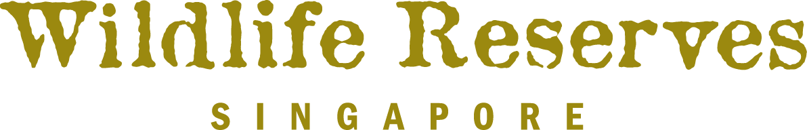
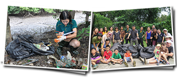

Conservation

- Over the years, Wildlife Reserve has participated in many International Coastal Cleanup.
- On 13th Sept 2014, 24 staffs and volunteers from Wildlife Reserve attended the cleanup.
- A total of 183kg of trash was picked up at the Pandan Mangrove Site.
- Most of the rubbish collected were plastic bags and food wrappers.